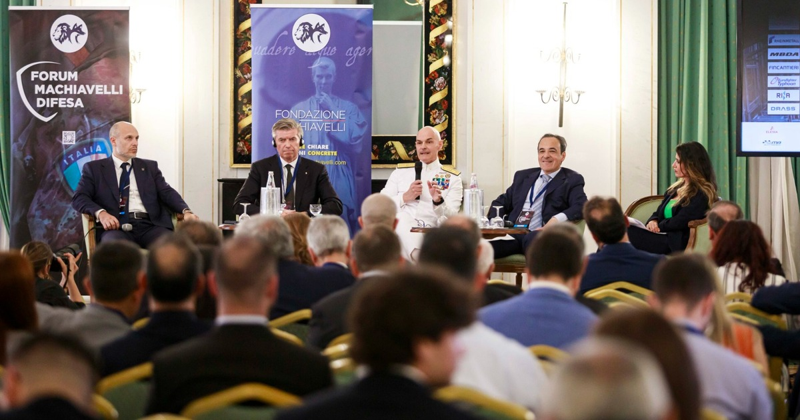
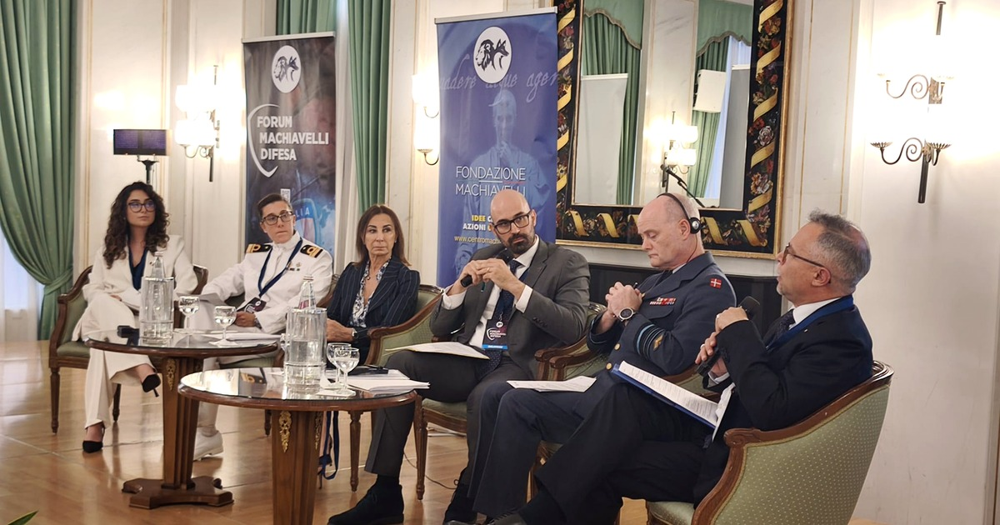

Il V Forum Machiavelli Difesa, dedicato al rapporto tra qualità e quantità nelle sfide di massa e innovazione, ha offerto nella Sala Verdi un percorso quasi progressivo: prima la base industriale e il procurement, poi la difesa aerea e missilistica, quindi il dominio subacqueo, l’High North, il futuro della guerra d’attrito e, in conclusione, il fattore umano. Letti insieme, questi panel restituiscono una tesi chiara: la sicurezza nazionale non nasce da un singolo dominio, da una singola tecnologia o da una singola istituzione, ma dalla capacità di integrare risorse, competenze, infrastrutture, industria, società e volontà politica.
La formula “qualità e quantità” non va quindi intesa come un semplice equilibrio tra sistemi d’arma sofisticati e volumi produttivi. È una grammatica strategica più ampia. Qualità significa superiorità tecnologica, comando e controllo, capacità di interpretare dati, interoperabilità, formazione del personale, cultura decisionale. Quantità significa scorte, produzione, rigenerazione, massa sostenibile, ridondanza, disponibilità di forze, resilienza logistica e industriale. Senza qualità, la massa rischia di diventare consumo; senza quantità, la qualità rischia di esaurirsi al primo urto di un conflitto prolungato.
Il filo comune emerso dai panel è proprio questo: l’innovazione non sostituisce l’attrito, ma lo modifica; la tecnologia non elimina la necessità della logistica, ma la rende ancora più decisiva; la superiorità informativa non cancella il fattore umano, ma lo espone a nuove responsabilità. La Sala Verdi ha così costruito una lettura integrata della Difesa come ecosistema nazionale.
Indice delle analisi
- Il procurement europeo: verso un ecosistema integrato e innovativo
- Dominio e difesa aerea: superiorità multidominio nell’era della saturazione
- Dominio sottomarino: tecnologie avanzate e profondità operativa negli abissi
- High North e nuove frontiere della sicurezza euro-atlantica

- Il futuro della guerra: lezioni dall’attrito e dalla saturazione
- Persone, leadership e difesa: moltiplicare il vantaggio strategico

Una lettura trasversale per il Sistema Paese
Considerati insieme, i panel della Sala Verdi restituiscono una diagnosi coerente. La Difesa italiana ed europea si trova davanti a una transizione nella quale non basta acquistare nuove tecnologie, aumentare le spese o adattare singoli strumenti. Occorre costruire un ecosistema capace di sostenere nel tempo innovazione, massa, prontezza, resilienza e volontà.
Il procurement europeo indica che la base industriale è parte della deterrenza. La difesa aerea mostra che il C2 integrato e la gestione dei dati sono il centro della superiorità operativa. Il dominio subacqueo dimostra che infrastrutture invisibili e catene del dato sono ormai elementi della sovranità. L’High North ricorda che sicurezza, energia, rotte e ambiente sono dimensioni interdipendenti. Il futuro della guerra riporta al centro attrito, logistica e volontà di combattere. Il panel finale sulle persone chiarisce che nessuna di queste dimensioni produce effetto se non è sostenuta da cultura, leadership e responsabilità collettiva.
La capacità produttiva, la supply chain e la rigenerazione delle scorte sono parte della credibilità strategica.
Sensori, C2, intelligenza artificiale e protezione dell’informazione decidono la velocità e la qualità della risposta.
Cavi, energia, basi, porti, rotte, reti digitali e servizi essenziali sono obiettivi e strumenti della sicurezza nazionale.
La tenuta non riguarda solo apparati militari, ma istituzioni, imprese, cittadini, comunicazione e fiducia pubblica.
La vera lezione della Sala Verdi è quindi che la Difesa non può più essere pensata come settore separato. È un sistema di sistemi: militare, industriale, tecnologico, sociale, cognitivo e politico. La sfida italiana sarà trasformare questa consapevolezza in pianificazione, formazione, investimenti, alleanze e cultura pubblica. Perché qualità e quantità, da sole, non bastano: diventano vantaggio strategico solo quando una nazione sa decidere, produrre, resistere e partecipare.